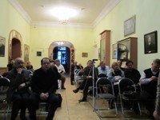
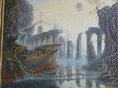
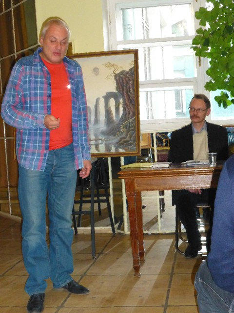
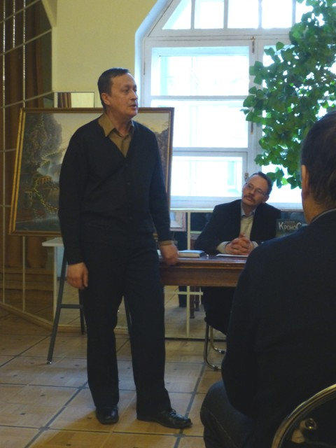
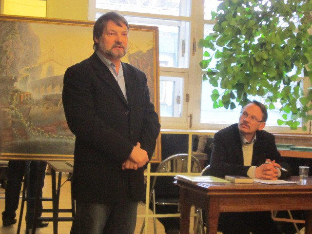
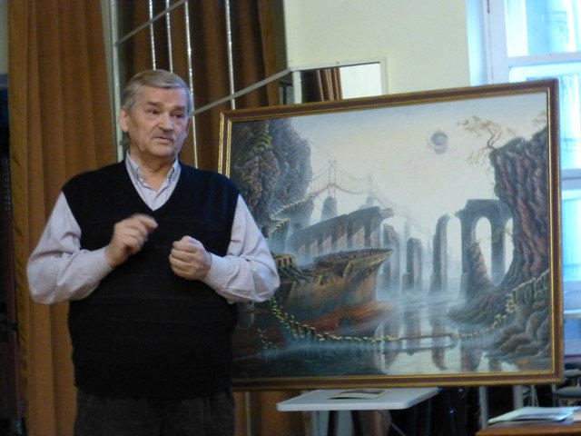
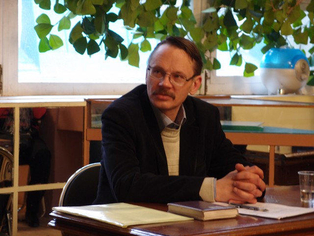
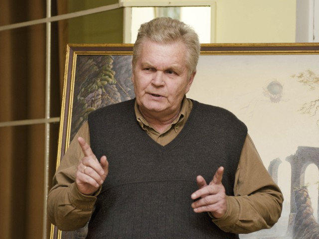
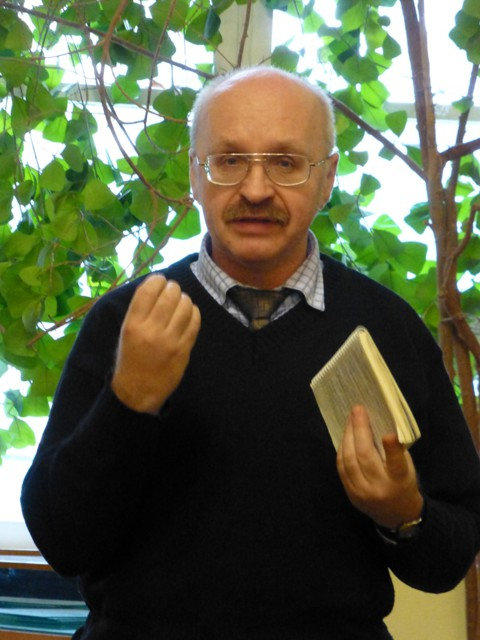
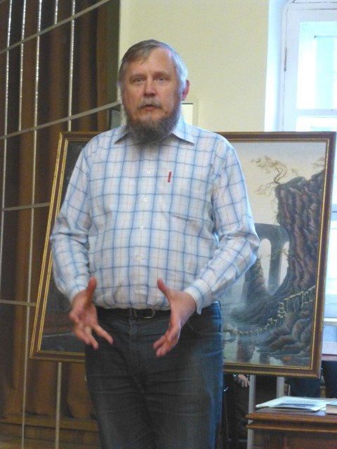

Дорогие друзья, коллеги и члены РОИПА!
4 апреля 2014 г. в помещении Музея "Серебряного века" ("Дом В.Я. Брюсова") состоялась презентация 2-го выпуска "Альманаха о тайнах древних цивилизаций - КРОНОС"
Мы рады представить фотоотчёт, запечатлевший в лицах тех, кто принял участие в мероприятии, и чьими усилиями и творчеством стал возможен выход второго выпуска:

Фото с презентации
Фото с презентации

Фото с презентации

Директор Музея "Серебряного века" («Дома В.Я. Брюсова») Михаил Шапошников

Зам. координатора ООО «Космопоиск», член Координационного Совета РОИПА Александр Петухов

Художник Юрий Немцев - автор картины на обложке «Кроноса»

Директор оптического театра, член РОИПА Сергей Зорин

Президент РОИПА, главный редактор альманаха «Кронос» Георгий Нефедьев

Историк, член Координационного Совета РОИПА Алексей Подъяпольский
Выпускающий редактор альманаха Николай Смирнов (издательство «Вече»)

Вице-президент РОИПА Юрий Мирошниченко

Научный сотрудник вычислительного центра им. А.А. Дородницына РАН, член РОИПА Василий Шевченко